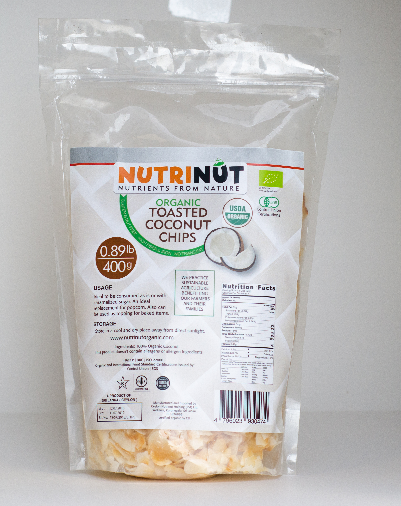

NutriNut Organic Toasted Coconut Chips
Your daily essential for healthy cooking and living.
Available Sizes
Description
These are thin, crunchy chips of nutrinut organic coconut meat that have been gently toasted until golden and crisp. Unlike the low-fat version, these chips retain their natural, healthy coconut oils, giving them a richer, nutty, and slightly sweet flavor.
Key Benefits
- Good Source of Healthy Fats: Contains Medium-Chain Triglycerides (MCTs), which your body can use as a quick and efficient source of energy.
- Naturally High in Fiber: Provides excellent dietary fiber, which helps support a healthy digestive system.
- Clean & Simple: Certified organic, meaning they are made without GMOs or synthetic pesticides, and are often free from added sugars or preservatives.
- Crunchy & Versatile: A satisfying, crunchy snack on its own, or a perfect topping for yogurt, salads, oatmeal, and baked goods.